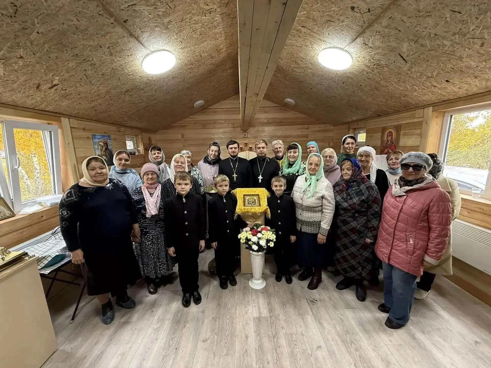

ПРЕОБРАЖЕНСКОЕ БЛАГОЧИНИЕЖизнь благочинияРедакционная обложка

Благочиние
В храме во имя преподобного Сергия Радонежского г. Бердска отметили первый престольный праздник
8 октября 2026 года временный храм преподобного Сергия Радонежского в Бердске впервые отметил престольный праздник. После литургии совершили славление святому, а затем прихожане и гости собрались за праздничной трапезой. Настоятель иерей Сергий Рудомётов рассказал о начале жизни новой общины.